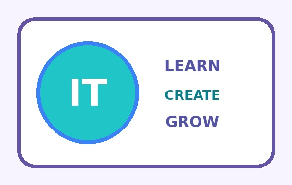

Мене звати Анна Бажан. Я навчаюся у сфері комп’ютерних наук і цікавлюся інформаційними технологіями. Мені подобається дізнаватися, як створюються цифрові продукти та як вони допомагають людям у повсякденному житті.
Під час навчання я розвиваю логічне мислення, вчуся працювати з кодом і створювати власні проєкти. Я переконана, що практика допомагає краще зрозуміти теорію, а уважність до деталей допомагає знаходити помилки.
Мене цікавить вебдизайн і програмування. Мені подобається поєднувати творчі ідеї з технічними інструментами, добирати кольори та структурувати інформацію так, щоб сторінка була зрозумілою.

Емблема.
Студентка групи 302-ТН Бажан А.В.